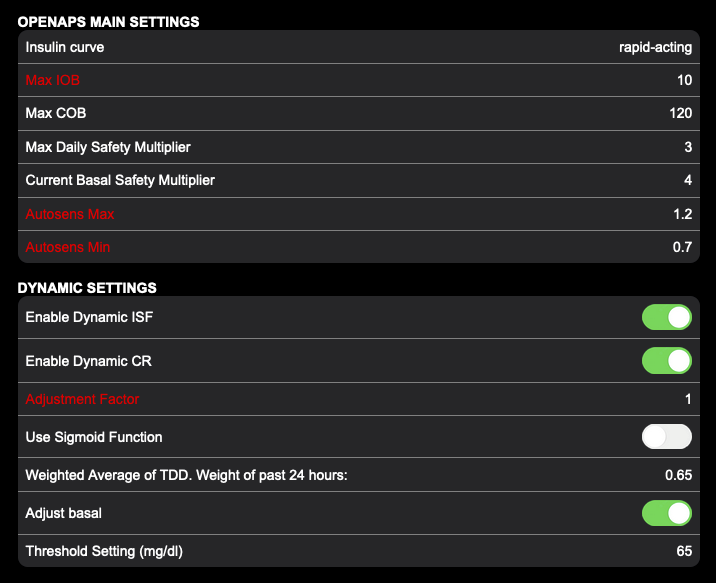

2 iAPS.app Default Settings
A up-to-date listing of iAPS.app default settings can be viewed at:
https://sites.google.com/bcdiabetes.ca/iaps-settings/home?pli=1
These are the settings currently set as default in a new distribution of the iAPS.app. Your can refer to this listing at any time.
This listing is useful if you need to re-enter the default settings after an unexpected update, or to compare your settings to current BCD defaults.
The Settings in RED are those unique to each individual.

Example of BCD Settings list
NOTE: The current default settings may be have changed: check the link given above. There are more RED settings than shown here, scroll the live listing to see others.